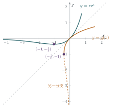

STEP II 2021，第 4 题
继续之前，请先阅读题目（原题为英文）。题目载于 OCR 提供下载的 2021 年 STEP 试卷（zip 文件）内的 STEP II 试卷： www.ocr.org.uk/Images/696588-2021-past-papers.zip
引子
你能解 \(e^{-x} = 5x\) 吗？计算机上没有任何一个函数帮得上忙。移项整理也无济于事：\(x\) 同时困在指数函数的里面和外面。你可以用试误法（trial and improvement）求出数值答案，但并没有甚么“公式”。
真的没有吗？这道题踏出了大胆的一步：如果某一族方程无法用已知的函数解出来，那就发明一个新函数来解它们。数学家当年正是这样得到 \(\sqrt{x}\)（\(x^2\) 的反函数）、\(\ln x\)（\(e^x\) 的反函数）和 \(\arcsin x\) 的。这里的新函数是 \(xe^x\) 的反函数（inverse function），现称为兰伯特 W 函数（Lambert W function）。有了它，从 \(x^x = 10\) 到一条物理定律，范围广得出人意料的各种方程都可以精确地解出来。
动笔之前
“解”一条方程，究竟是甚么意思？\(x = \sqrt{2}\) 是 \(x^2 = 2\) 的解，还是只不过是那个解的名字？
两者皆是。\(\sqrt2\) 是“平方等于 \(2\) 的那个正数”的名字；我们接受它作为答案，是因为函数 \(\sqrt{\phantom{x}}\) 已为人熟知、容易计算，而且性质清楚。一个答案算不算“公式”，取决于我们约定了为哪些函数命名。这道题为这份名单再添一个。
逐步解题
阶段 1 曲线 \(y = xe^x\)
\(\frac{\mathrm{d}y}{\mathrm{d}x} = e^x + xe^x = (1 + x)e^x\)，它只在 \(x = -1\) 处为零，此时 \(y = -e^{-1}\)。导数（derivative）在 \(x < -1\) 时为负，在 \(x > -1\) 时为正，所以这是一个极小值（minimum）。
当 \(x \to +\infty\) 和 \(x \to -\infty\) 时，\(xe^x\) 会怎样？曲线在哪里与坐标轴相交？
当 \(x \to \infty\) 时，\(xe^x \to \infty\)。当 \(x \to -\infty\) 时，\(xe^x \to 0\)（从下方趋近），因为指数衰减胜过线性增长。曲线通过原点。所以它从负 \(x\) 轴的稍下方进来，下降至极小点 \((-1, -\frac1e)\)，然后上升穿过 \((0, 0)\)，再急速向上（图 3.9.1）。
阶段 2 反函数
要有反函数，\(\mathrm{f}\) 必须是一对一（one-to-one）的，所以必须把它限制在一个严格递增（strictly increasing）或严格递减的区域上。包含右边部分的最大区间是 \([-1, \infty)\)，所以 \(a = -1\)。在 \([-1, \infty)\) 上，\(\mathrm{f}\) 由 \(-\frac1e\) 递增至 \(\infty\)，所以反函数 \(\mathrm{g}\) 定义在 \([-\frac1e, \infty)\) 上，由 \(\mathrm{g}(-\frac1e) = -1\) 开始递增，经过 \(\mathrm{g}(0) = 0\)，并且增长缓慢（当 \(x\) 很大时，比 \(\ln x\) 还要慢）。它的图像是 \(y = xe^x\) 右边部分关于直线 \(y = x\) 的反射，在 \((-\frac1e, -1)\) 处有一条垂直切线。
\(\mathrm{g}\) 的定义性质是 \[\mathrm{g}(z)\,e^{\mathrm{g}(z)} = z, \qquad \mathrm{g}(z) \geq -1.\] 所以 (iii) 中每一部分的策略都一样：把方程整理成 \((\text{某个式子})\,e^{(\text{同一个式子})} = (\text{一个数})\) 的形式。

阶段 3 四条方程
(a) \(e^{-x} = 5x\)。乘以 \(e^x\) 再除以 \(5\)：\(xe^x = \frac15\)。所以 \(x = \mathrm{g}\bigl(\frac15\bigr) \approx 0.169\)。由于 \(xe^x\) 在 \(x < 0\) 时为负，任何根都是正数，而 \(xe^x\) 在 \(x > 0\) 时递增，所以这是唯一的根。
在 (b) 和 (c) 中，未知数以 \(x\ln x\) 的形式出现。用甚么代换（substitution）可以把 \(x\ln x\) 变成 \(ue^u\) 的形式？
设 \(x = e^u\)，则 \(\ln x = u\)，而 \(x\ln x = ue^u\)。
(b) \(2x\ln x + 1 = 0\) 变成 \(ue^u = -\frac12\)。但对所有实数 \(u\) 都有 \(ue^u \geq -\frac1e \approx -0.368\)，而 \(-\frac12 < -\frac1e\)。所以没有实根。
(c) \(3x\ln x + 1 = 0\) 变成 \(ue^u = -\frac13\)，而 \(-\frac1e < -\frac13 < 0\)。高度为 \(-\frac13\) 的水平线与 \(y = ue^u\) 相交两次，在极小点 \(u = -1\) 的两侧各一次。右边的根是 \(u = \mathrm{g}\bigl(-\frac13\bigr)\)，由此得 \[x = e^{\mathrm{g}(-1/3)} \approx 0.538.\] 另一个根满足 \(u < -1 < \mathrm{g}\bigl(-\frac13\bigr)\)，而 \(x = e^u\) 随 \(u\) 递增，所以我们找到的根是两者之中较大的一个。（另一个约为 \(0.220\)。）
现在试做 (d)，\(x = 3\ln x\)。（提示：两边取指数，设法凑成 \((\text{某个式子})\,e^{\text{某个式子}}\) 的形式，其中“某个式子”是 \(x\) 的倍数。）
(d) \(x = 3\ln x\) 即 \(e^{x/3} = x\)，所以 \(xe^{-x/3} = 1\)，再乘以 \(-\frac13\)， \[\left(-\frac x3\right)e^{-x/3} = -\frac13.\] 所以 \(-\frac x3\) 是在 (c) 中找到的 \(ue^u = -\frac13\) 的两个解之一。取由 \(\mathrm{g}\) 给出的那一个，\(x = -3\,\mathrm{g}\bigl(-\frac13\bigr) \approx 1.857\)。另一个根来自另一个解 \(u < \mathrm{g}(-\frac13)\)，它给出较大的 \(x = -3u\)。所以这一次我们找到的根是两者之中较小的一个。（另一个约为 \(4.536\)。）■
阶段 4 \(x^x = 10\)
取对数，\(x\ln x = \ln 10\)。设 \(x = e^u\)，这就是 \(ue^u = \ln 10\)，所以 \(u = \mathrm{g}(\ln 10)\)，而 \[x = e^{\mathrm{g}(\ln 10)} \approx 2.506.\] 由于 \(\mathrm{g}(z)e^{\mathrm{g}(z)} = z\)，我们也可以把它写成 \(x = \dfrac{\ln 10}{\mathrm{g}(\ln 10)}\)。■
回顾
为缺少的函数命名。当一条方程无法用已知函数解出时，把一个新函数定义为反函数，是正当的做法，而且往往富有启发性。
整理成标准形式。(iii) 和 (iv) 的每一部分最终都归结为 \(ue^u = \text{常数}\)，用的是 \(x = e^u\) 或 \(u = -\frac x3\) 之类的代换。
用图像数根的个数。\(ue^u = c\) 有零个、一个还是两个解，只取决于 \(c\) 相对于极小值 \(-\frac1e\) 的位置。
背后的数学
兰伯特（Johann Heinrich Lambert）在 1758 年研究过这类方程，欧拉（Euler）在 1783 年作了进一步的研究。但这个函数一直没有标准名称，直到 1990 年代，电脑代数系统（computer algebra system）Maple 的开发者需要为它起一个名字。1996 年，Robert Corless、Gaston Gonnet、David Hare、David Jeffrey 和 Donald Knuth 发表了论文“On the Lambert W function”，汇集了它的性质和应用。这篇论文已被引用数千次，而 W 现已内置于大多数数学软件之中。题目中的函数 \(\mathrm{g}\) 是主分支（principal branch）\(W_0\)；图 3.9.1 中的虚线，即给出 (c) 和 (d) 中第二个根的那条曲线，是另一个实分支 \(W_{-1}\)。
W 出现在哪里
维恩位移定律（Wien’s displacement law）。热的物体辐射最强的波长与其温度成反比。当中的常数来自解方程 \(5(1 - e^{-x}) = x\)，其正数解为 \(x = 5 + W\bigl(-5e^{-5}\bigr) \approx 4.965\)。这就是为甚么约 \(5800\) K 的太阳看起来是黄白色，而温度较低的红矮星看起来是红色。
幂塔（power tower）。无穷幂塔 \(x^{x^{x^{\cdot^{\cdot^{\cdot}}}}}\) 在 \(e^{-e} \leq x \leq e^{1/e}\) 时收敛（converge），其值为 \(\dfrac{W(-\ln x)}{-\ln x}\)。
人口与传染病模型。在最简单的模型中，一场传染病的最终规模，以及某些增长模型中达到指定人口所需的时间，都由 W 给出。
初等函数
\(W\) 真的是新函数吗？还是可以用 \(\exp\)、\(\ln\)、根式和三角函数写出来？它确实是新的：一条可追溯至 1830 年代刘维尔（Joseph Liouville）的定理表明，\(W\) 不是初等函数（elementary function）。同一套理论还表明，一些看似平平无奇的积分，例如 \(\int e^{-x^2}\,\mathrm{d}x\)，无法用初等函数表示，这就是为甚么正态分布（normal distribution）需要自己专用的特殊函数。
思维技巧
方程 \(\mathrm{f}(x) = c\) 的解是 \(x = \mathrm{f}^{-1}(c)\)，前提是把 \(\mathrm{f}\) 限制成一对一的函数。这个限制决定了你得到的是哪一个解。
许多看似不同的方程，其实是同一条方程的不同伪装；找出能揭示共同形式的代换，就是关键的一步。
延伸练习
二、四，还有一个。方程 \(x^2 = 2^x\) 有显而易见的解 \(x = 2\) 和 \(x = 4\)（比较 第 3.5 节）。证明它还有一个负数解，而这个解是 \[x = -\frac{2}{\ln 2}\,\mathrm{g}\!\left(\frac{\ln 2}{2}\right) \approx -0.767.\]
一个导数。对 \(\mathrm{g}(x)e^{\mathrm{g}(x)} = x\) 作隐函数微分（implicit differentiation），证明当 \(x \neq 0\) 时， \[\mathrm{g}'(x) = \frac{\mathrm{g}(x)}{x\bigl(1 + \mathrm{g}(x)\bigr)}.\] 在 \(x = -\frac1e\) 处会怎样？
一个积分。利用代换 \(x = we^w\) 证明 \(\displaystyle\int_0^e \mathrm{g}(x)\,\mathrm{d}x = e - 1\)。
幂塔。假设幂塔 \(T = \sqrt2^{\sqrt2^{\sqrt2^{\cdots}}}\) 收敛，证明 \(T = \sqrt2^{\,T}\)，并由此推出 \(T = 2\) 或 \(T = 4\)。究竟是哪一个？（计算数列 \(t_1 = \sqrt2\)、\(t_{n+1} = \sqrt2^{\,t_n}\) 的头几项，并想想 第 2.2 节 中的蛛网图（cobweb diagram）。）
延伸阅读
Robert Corless et al., “On the Lambert W function”，Advances in Computational Mathematics 5 (1996)。为这个函数命名的论文。读完本节之后，论文的头几节应可读懂。
Brian Hayes, “Why W?”，American Scientist 93 (2005)。一篇生动的文章，讲述这个函数的历史和用途。可在网上免费阅读。
Brian Conrad, “Impossibility theorems for elementary integration”。网上可找到的讲义，解释刘维尔的理论。程度较深。